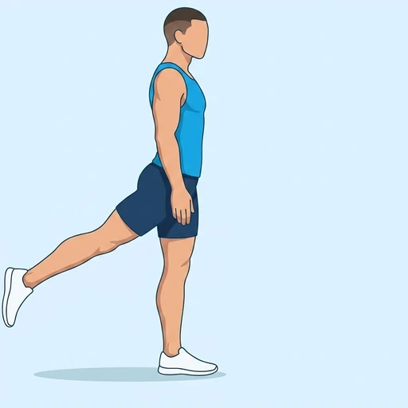
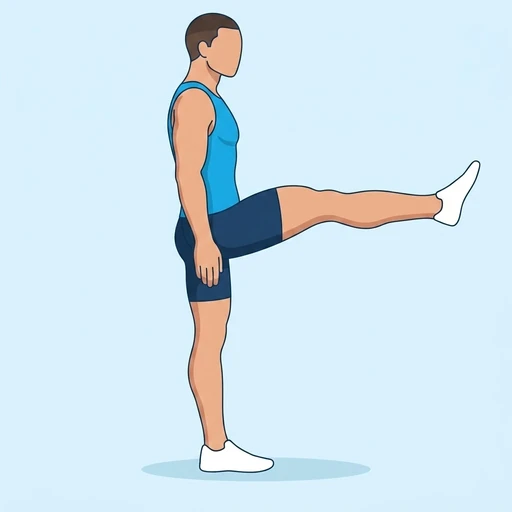

Front-to-Back Leg Swing
A dynamic hip-mobility drill that swings one straight or softly bent leg forwards and backwards while the standing side stabilises the pelvis.
Upper legs · Bodyweight · Beginner


Muscles worked by the Front-to-Back Leg Swing
Primary
Secondary
Also called: glute, glutes, gluteus maximus, buttocks, butt, hip flexor.
Equipment
No equipment — this is a bodyweight exercise.
How to do the Front-to-Back Leg Swing
- Stand tall beside a stable support and shift the weight onto the inside leg.
- Brace the trunk and lift the outside foot slightly from the floor.
- Swing the free leg forwards through a comfortable range.
- Let it travel back behind the body without arching the lower back.
- Continue smoothly, then repeat with the other leg.
Form tips
- Keep the torso tall and let the movement come from the hip.
- Use a small range first and increase it as the hip warms up.
- Keep the standing foot planted and the pelvis facing forward.
At a glance
| Body part | Upper legs |
|---|---|
| Category | Stretching |
| Force type | Dynamic |
| Mechanic | Isolation |
| Difficulty | Beginner |
| Equipment | Bodyweight |
| Goals | Mobility, Rehabilitation |
| Tags | Mobility, Warm up, Leg day, Bodyweight |
| MET | 3.5 (metabolic equivalent, for calorie estimates) |
| Unilateral | Yes |
| Bodyweight | Yes |
| Dataset id | leg-swing-front-to-back |
Front-to-Back Leg Swing in German & Spanish
| German | Beinschwingen vor und zurück |
|---|---|
| Spanish | Balanceo de Pierna Adelante y Atrás |
Descriptions, instructions and tips ship in all three languages in the JSON.
Related exercises
Exercise data (JSON)
The record below is exactly what exercises.json ships for this exercise — names, descriptions, instructions and tips in English, German and Spanish.
{
"id": "leg-swing-front-to-back",
"name_en": "Front-to-Back Leg Swing",
"name_de": "Beinschwingen vor und zurück",
"name_es": "Balanceo de Pierna Adelante y Atrás",
"description_en": "A dynamic hip-mobility drill that swings one straight or softly bent leg forwards and backwards while the standing side stabilises the pelvis.",
"description_de": "Eine dynamische Hüftmobilisation, bei der ein gestrecktes oder leicht gebeugtes Bein vor und zurück schwingt, während die Standseite das Becken stabilisiert.",
"description_es": "Un ejercicio dinámico de movilidad de cadera que balancea una pierna recta o ligeramente flexionada hacia delante y hacia atrás mientras el lado de apoyo estabiliza la pelvis.",
"category": "stretching",
"force_type": "dynamic",
"mechanic": "isolation",
"difficulty": "beginner",
"body_part": "upper_legs",
"primary_muscles": [
"gluteus_maximus",
"hip_flexors"
],
"secondary_muscles": [
"hamstrings",
"rectus_abdominis"
],
"goals": [
"mobility",
"rehabilitation"
],
"tags": [
"mobility",
"warm_up",
"leg_day",
"bodyweight"
],
"variation_group": "leg-swing",
"is_unilateral": true,
"is_bodyweight": true,
"instructions_en": [
"Stand tall beside a stable support and shift the weight onto the inside leg.",
"Brace the trunk and lift the outside foot slightly from the floor.",
"Swing the free leg forwards through a comfortable range.",
"Let it travel back behind the body without arching the lower back.",
"Continue smoothly, then repeat with the other leg."
],
"instructions_de": [
"Stell dich aufrecht neben eine stabile Stütze und verlagere das Gewicht auf das innere Bein.",
"Spann den Rumpf an und heb den äußeren Fuß leicht vom Boden.",
"Schwing das freie Bein in einem angenehmen Bewegungsumfang nach vorn.",
"Lass es hinter den Körper zurückschwingen, ohne den unteren Rücken zu überstrecken.",
"Schwing flüssig weiter und wiederhole die Übung anschließend mit dem anderen Bein."
],
"instructions_es": [
"Ponte erguido junto a un apoyo estable y lleva el peso a la pierna interior.",
"Activa el tronco y eleva ligeramente el pie exterior del suelo.",
"Balancea la pierna libre hacia delante dentro de un rango cómodo.",
"Déjala viajar hacia atrás sin arquear la zona lumbar.",
"Continúa con fluidez y después repite con la otra pierna."
],
"tips_en": [
"Keep the torso tall and let the movement come from the hip.",
"Use a small range first and increase it as the hip warms up.",
"Keep the standing foot planted and the pelvis facing forward."
],
"tips_de": [
"Halte den Oberkörper aufrecht und lass die Bewegung aus der Hüfte kommen.",
"Beginn mit einem kleinen Bewegungsumfang und vergrößere ihn beim Aufwärmen.",
"Lass den Standfuß fest am Boden und das Becken nach vorn zeigen."
],
"tips_es": [
"Mantén el torso erguido y deja que el movimiento salga de la cadera.",
"Empieza con un rango pequeño y auméntalo a medida que se calienta la cadera.",
"Conserva el pie de apoyo plantado y la pelvis orientada al frente."
],
"met": 3.5,
"images": {
"flat": {
"start": "images/flat/leg-swing-front-to-back-start.webp",
"peak": "images/flat/leg-swing-front-to-back-peak.webp"
}
}
}Fetch just this exercise
const { exercises } = await fetch(
"https://exercise-dataset.com/exercises.json"
).then(r => r.json());
const ex = exercises.find(e => e.id === "leg-swing-front-to-back");Free for personal and commercial in-app use with attribution (“Exercise data by RepDB”) — see the license and ready-made attribution snippets. Redistributing the data as a dataset or API is not permitted.